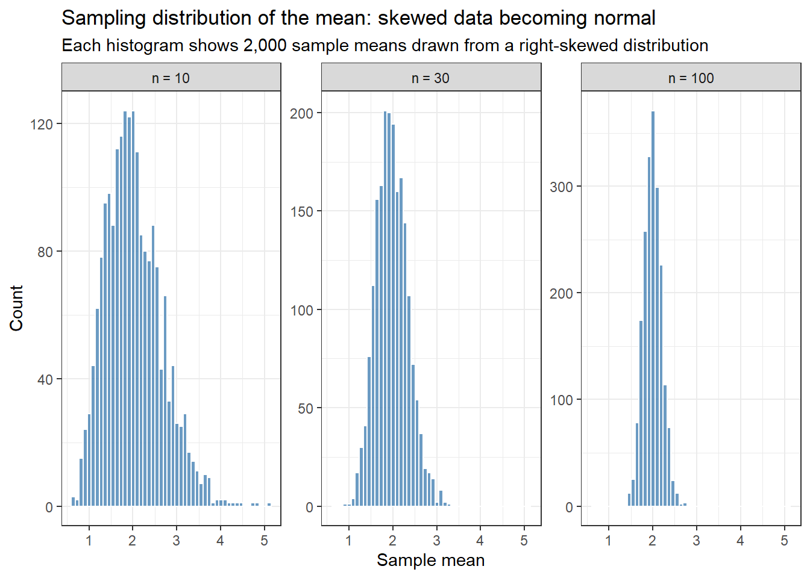
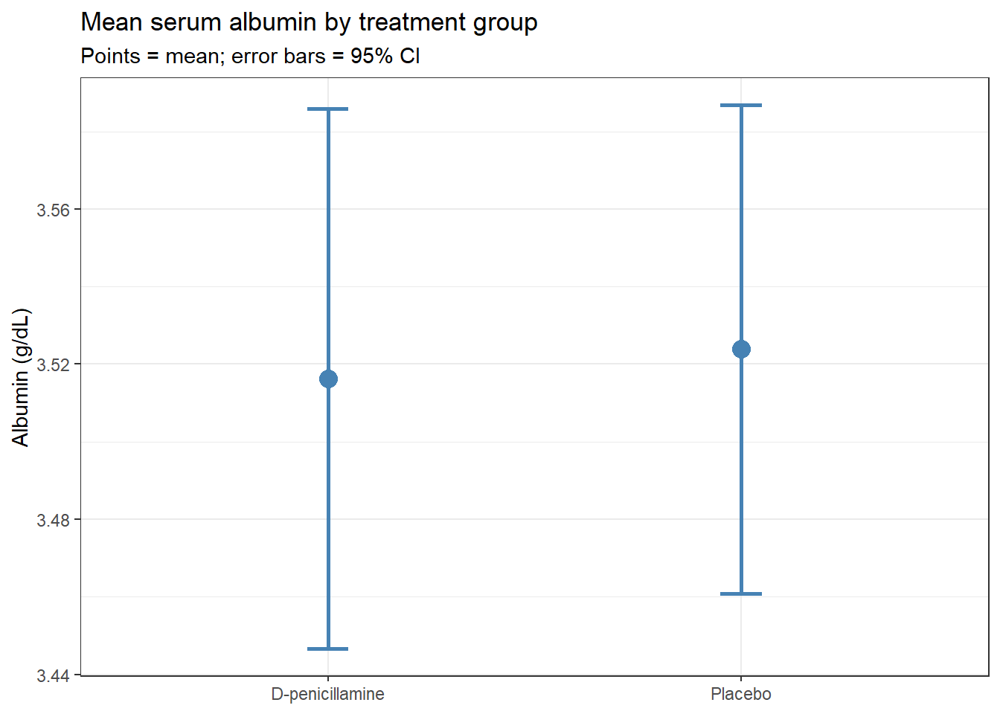

In a taught course, this session fits one teaching block, possibly running slightly long. For self-paced study, split it into two sittings, e.g. Background and Example 1 first, Example 2 onward later. Exercise 3 is open-ended and works best as a follow-up using your own data.
TipHow to Use the Code in This Session
Every code chunk below is written so you can copy it into your R console (or an R script) and run it yourself, in the order shown. Where you see a “Run It Yourself” box, stop and run the code above it before reading the explanation that follows.
2.1 When Do You Use This?
Tip
You have measured something in a sample of patients, animals, or cells, and you want to say something about the broader population they came from. Estimation gives you a best guess for the population value, and a confidence interval tells you how precise that guess is. For example: you measure albumin in 418 patients with a liver disease and want to estimate the mean albumin in all patients with that disease, not just the ones in your clinic. Or you run a trial and want to report what proportion of patients responded, with an honest statement of how uncertain that proportion is.
This session covers the concepts that underpin almost everything else in this course. When you later read a t-test result or a regression coefficient, what you are really reading is an estimate with a confidence interval. Understanding this session well will make every session that follows easier to interpret.
NoteTeacher Note
This session sets the mental model for the entire course: estimate + uncertainty. Ask the room for an example from their own work where they report a single number (a mean, a proportion, a rate) and probe: “how sure are you about that number?” Most will not have a ready answer. That gap is exactly what this session fills, and it is worth dwelling on before moving to formulas.
2.2 Learning Objectives
After completing this session you will be able to:
Explain what a sampling distribution and standard error are, and why they matter
State the Central Limit Theorem and understand why it makes confidence intervals valid even for skewed data
Compute confidence intervals for means and proportions in R
Interpret a 95% confidence interval correctly, and avoid the most common misinterpretation
Use bootstrap resampling when distributional assumptions are uncertain
Before revealing the “most common CI misinterpretation” callout below, ask the room to write down, in their own words, what a “95% confidence interval” means. Collect a few answers on the board. Most will phrase it as a probability statement about the true value (“there’s a 95% chance the true mean is in this range”), which is the exact misconception the callout addresses. Revisiting their own board answers after reading the callout makes the correction stick far better than presenting it cold.
2.3.1 The core problem
You can never measure every patient, mouse, or cell in the world. You measure a sample and use it to estimate something about the population it came from. The key challenge is: your sample is just one of infinitely many samples you could have drawn. A different clinic, a different week, a different cohort, and you would have gotten slightly different numbers.
Statistics gives you tools to say: “here is my best estimate, and here is a honest measure of how much it would have wobbled if I had drawn a different sample.”
2.3.2 A concrete analogy
Before any formulas: think of an election poll. A polling firm surveys 1,000 voters and reports that 54% support Party A (95% CI: 51% to 57%). They did not survey every voter. They surveyed a sample and used it to estimate the population proportion, the share of all voters who support Party A. The confidence interval is their honest statement about how much that estimate could have moved if they had called a different 1,000 people.
That is exactly what you are doing in every study. Your sample is the poll. Your confidence interval is the margin of error. The only difference is that instead of voting preferences, you are measuring bilirubin, survival times, or gene expression.
2.3.3 Three numbers you need to know
Point estimate: Your best single guess at the population value. For a mean, this is just the sample mean \(\bar{x}\).
Standard error (SE): How much your point estimate would move if you repeated the study on a fresh sample of the same size. It is not the spread of your data (that is the standard deviation); it is the spread of your estimate:
\[SE(\bar{x}) = \frac{s}{\sqrt{n}}\]
Two things follow directly from this formula. First, larger samples give smaller SEs: your estimate gets more precise as \(n\) grows. Second, more variable data (larger \(s\)) gives larger SEs: noisier measurements are harder to estimate precisely.
Confidence interval (CI): A range built around the point estimate so that, across many repetitions of the study, the specified fraction of intervals would contain the true population value:
\[95\% \text{ CI for } \mu \approx \bar{x} \pm 1.96 \times SE(\bar{x})\]
WarningThe most common CI misinterpretation
“There is a 95% probability that the true mean lies in this interval.”
This is wrong. The true mean is a fixed (unknown) number: it either is in your interval or it is not. The 95% refers to the procedure: if you repeated your study 100 times, approximately 95 of the resulting intervals would contain the true mean.
Think of it as a fishing net, not a probability. The fish (true mean) is somewhere in the lake. Your CI is a single throw of the net. A “95% CI” means your net-throwing technique, if used repeatedly, catches the fish 95% of the time. On any single throw, you either caught it or you did not.
2.3.4 The Central Limit Theorem: why any of this works
NoteTeacher Note
Live-demo idea: after running the chunk below, change rexp(n, rate = 0.5) to a different distribution, e.g. runif(n, 0, 1) or rbinom(n, 1, 0.1), and re-run. The same pattern appears regardless of the starting shape. A good follow-up question: “what if we plotted the sampling distribution of the maximum instead of the mean?” (It does not become normal. This contrast sharpens what is special about the mean, and why the CLT is specifically a statement about averages.)
Here is the remarkable fact at the heart of statistics: even if individual measurements are skewed, heavy-tailed, or oddly distributed, the sampling distribution of the mean becomes approximately normal as sample size increases. This is the Central Limit Theorem (CLT).
It is worth seeing rather than just reading about. Run this simulation and look at what happens:
set.seed(42)# We start with a strongly right-skewed distribution (exponential).# Individual values look nothing like a normal distribution.# But what does the distribution of *sample means* look like?sim_means <-tibble(n_10 =replicate(2000, mean(rexp(10, rate =0.5))),n_30 =replicate(2000, mean(rexp(30, rate =0.5))),n_100 =replicate(2000, mean(rexp(100, rate =0.5)))) %>%pivot_longer(everything(), names_to ="sample_size", values_to ="mean") %>%mutate(sample_size =factor(sample_size,levels =c("n_10", "n_30", "n_100"),labels =c("n = 10", "n = 30", "n = 100")))ggplot(sim_means, aes(x = mean)) +geom_histogram(bins =50, fill ="steelblue", color ="white", alpha =0.8) +facet_wrap(~ sample_size, scales ="free_y") +labs(title ="Sampling distribution of the mean: skewed data becoming normal",subtitle ="Each histogram shows 2,000 sample means drawn from a right-skewed distribution",x ="Sample mean", y ="Count" ) +theme_bw()

TipRun It Yourself
Run the chunk above. You should see three histograms, labelled n = 10, n = 30, and n = 100. Even though every individual draw comes from a steeply right-skewed exponential distribution, the n = 10 panel is already roughly bell-shaped (with a slight right skew), n = 30 looks close to normal, and n = 100 is essentially indistinguishable from a normal curve. Before reading on: if you started from an even more skewed distribution (try changing rate = 0.5 to rate = 0.05), would you expect to need a larger or smaller sample size for the same effect?
Each histogram shows 2,000 means, each computed from a fresh random sample of exponential (right-skewed) data. At \(n = 10\) the distribution of means is already roughly bell-shaped. By \(n = 30\) it is nearly normal. By \(n = 100\) it is indistinguishable from a normal distribution, even though every single raw data point came from a skewed distribution.
This is why t-tests and confidence intervals work for most biomedical data: you do not need your raw measurements to be normal. You need your sample size to be large enough for the CLT to apply. As a rough guide, \(n \geq 30\) is sufficient for mildly skewed data; heavier skew requires larger samples.
2.4 Example 1: Clinical Data (PBC)
Estimated time: ~25 minutes (worked example)
NoteTeacher Note
This example revisits the survival::pbc dataset and the albumin variable used again in the T-tests session. If the group has not reached that session yet, that is fine: everything here is estimation, no hypothesis tests. If they have, it is worth pointing out that the CI computed by hand below is the same interval that t.test() reports: estimation and testing share the same machinery, just with different questions attached.
The survival::pbc dataset contains data from a clinical trial of 418 patients with primary biliary cirrhosis (PBC), a chronic liver disease. We will use it to estimate key population quantities.
Serum albumin is a marker of liver function. Normal levels in healthy adults are roughly 3.5–5.0 g/dL. PBC impairs the liver’s ability to synthesise albumin, so it is natural to ask: across this cohort, where does the average sit relative to that threshold? Let’s estimate the mean albumin and quantify our uncertainty:
albumin_est <- pbc %>%filter(!is.na(albumin)) %>%summarise(n =n(),mean =mean(albumin),sd =sd(albumin),se = sd /sqrt(n),ci_lower = mean -qt(0.975, df = n -1) * se,ci_upper = mean +qt(0.975, df = n -1) * se )albumin_est
# A tibble: 1 × 6
n mean sd se ci_lower ci_upper
<int> <dbl> <dbl> <dbl> <dbl> <dbl>
1 418 3.50 0.425 0.0208 3.46 3.54
TipRun It Yourself
Run the chunk above. You should get n = 418, mean ≈ 3.50, sd ≈ 0.425, se ≈ 0.0208, and a 95% CI of about (3.46, 3.54). Before reading on: does this interval sit clearly below 3.5, clearly above it, or does it straddle 3.5? What would you conclude about this cohort’s average albumin relative to the normal range?
NoteReading the Output
Column
What it means
n
Sample size. More observations → smaller SE → narrower CI.
mean
The point estimate: our best guess at the population mean.
sd
Spread of individual albumin values. This is not the SE.
se
How much our sample mean would vary across repeated studies. Equals sd / √n.
ci_lower / ci_upper
The 95% confidence interval. The formula is mean ± qt(0.975, df=n−1) × se.
In plain English: We estimate that the mean albumin in PBC patients is 3.5 g/dL (95% CI: 3.46 to 3.54 g/dL). This interval straddles the lower limit of the normal range (3.5 g/dL): the point estimate sits just below 3.5, but the CI extends comfortably above it too. On average, this cohort is not clearly below the normal range.
That might seem surprising for a disease that is supposed to reduce albumin. The explanation is that PBC spans a wide spectrum, from early, asymptomatic disease (near-normal albumin) to advanced cirrhosis (severely depleted albumin). A single cohort-wide mean blends both ends of that spectrum, and an estimate that sits right on the threshold, with a CI that straddles it, is itself informative: it tells you that “PBC” is not a single homogeneous state, and that disease stage matters more than diagnosis alone for this marker. The T-tests session revisits this same number from a hypothesis-testing angle.
2.4.2 The fast way: using t.test()
You do not need to write the formula manually. t.test() on a single vector gives you the same CI:
t.test(pbc$albumin)
One Sample t-test
data: pbc$albumin
t = 168.26, df = 417, p-value < 2.2e-16
alternative hypothesis: true mean is not equal to 0
95 percent confidence interval:
3.456582 3.538299
sample estimates:
mean of x
3.49744
TipRun It Yourself
Run the chunk above. The 95% CI (about 3.4566 to 3.5383) should match the ci_lower/ci_upper you computed by hand in the previous chunk almost exactly: same calculation, different packaging. Notice the tiny p-value (< 2.2e-16) and huge t-statistic (t ≈ 168): that is testing the default null mu = 0 (zero albumin), which no real patient has. A tiny p-value here is meaningless; it is an artefact of testing an irrelevant hypothesis.
The default null hypothesis (\(\mu = 0\)) is irrelevant here: we are only using the function to get the confidence interval. You can ignore the p-value in this context.
2.4.3 Confidence interval for a proportion
What proportion of trial participants are female? Use prop.test(), which gives a Wilson interval rather than the simple Wald formula. The Wilson interval is more reliable when the proportion is near 0 or 1.
1-sample proportions test with continuity correction
data: n_female out of n_total, null probability 0.5
X-squared = 258.95, df = 1, p-value < 2.2e-16
alternative hypothesis: true p is not equal to 0.5
95 percent confidence interval:
0.8603074 0.9216882
sample estimates:
p
0.8947368
TipRun It Yourself
Run the chunk above. You should get p ≈ 0.895 (about 89.5% of trial participants are female), with a 95% CI of about (0.860, 0.922). This fits what is known about PBC: it disproportionately affects women. Notice how narrow this CI is even though the proportion is far from 0.5: with n = 418, the estimate is precise.
2.4.4 Comparing estimates across groups
Now let’s compute separate estimates for each treatment group. This is the first step before any formal test: look at the estimates and their intervals side by side.
group_est <- pbc %>%filter(!is.na(trt), !is.na(albumin)) %>%group_by(trt) %>%summarise(n =n(),mean =mean(albumin),se =sd(albumin) /sqrt(n),ci_lower = mean -qt(0.975, df = n -1) * se,ci_upper = mean +qt(0.975, df = n -1) * se )group_est
# A tibble: 2 × 6
trt n mean se ci_lower ci_upper
<fct> <int> <dbl> <dbl> <dbl> <dbl>
1 D-penicillamine 158 3.52 0.0353 3.45 3.59
2 Placebo 154 3.52 0.0319 3.46 3.59
group_est %>%ggplot(aes(x = trt, y = mean, ymin = ci_lower, ymax = ci_upper)) +geom_point(size =4, color ="steelblue") +geom_errorbar(width =0.1, color ="steelblue", linewidth =1) +labs(title ="Mean serum albumin by treatment group",subtitle ="Points = mean; error bars = 95% CI",x =NULL,y ="Albumin (g/dL)" ) +theme_bw()

TipRun It Yourself
Run both chunks above. You should get nearly identical group means (both ≈ 3.52), with CIs of about (3.45, 3.59) for D-penicillamine and (3.46, 3.59) for Placebo. The plot should show two points at almost the same height, with heavily overlapping error bars. Before reading on: based on this plot alone, would you guess the treatment groups differ on baseline albumin?
The two CIs overlap substantially, a visual hint that the groups probably do not differ on albumin. But overlapping CIs are not a formal test. For a definitive answer you need a two-sample t-test, which is the subject of the next session.
2.5 Example 2: Small Samples and Bootstrap CIs
Estimated time: ~15 minutes (worked example)
NoteTeacher Note
Live activity: write 8-10 numbers on the board (e.g., a quick show-of-hands measurement from the room). Have a few students “resample with replacement” by picking indices at random (dice, or slips of paper) and recompute the mean each time. After 5-6 resamples, plot the means on the board. This hands-on version of the boot() call below demystifies what “resampling” actually does before R does it 1,000 times in a fraction of a second.
The formula-based CI assumes the sampling distribution of the mean is normal. The CLT guarantees this for large samples, but with small samples from skewed distributions that assumption can break down. The bootstrap is an alternative that makes no distributional assumptions at all.
The idea is simple: if you had infinite money you could repeat your study thousands of times and directly observe the sampling distribution of your estimate. You do not have infinite money, but you do have your data. The bootstrap resamples your data (with replacement) thousands of times, treating it as a stand-in for the population. The spread of the resulting estimates becomes your confidence interval.
set.seed(2024)mice <-tibble(group =rep(c("Control", "Treatment"), each =20),weight =c(rnorm(20, mean =28, sd =3),rnorm(20, mean =25, sd =3)))mice %>%group_by(group) %>%summarise(n =n(),mean =mean(weight),sd =sd(weight),se = sd /sqrt(n),ci_lower = mean -qt(0.975, df = n -1) * se,ci_upper = mean +qt(0.975, df = n -1) * se )
# A tibble: 2 × 7
group n mean sd se ci_lower ci_upper
<chr> <int> <dbl> <dbl> <dbl> <dbl> <dbl>
1 Control 20 27.1 3.63 0.811 25.4 28.8
2 Treatment 20 24.7 2.64 0.591 23.5 25.9
BOOTSTRAP CONFIDENCE INTERVAL CALCULATIONS
Based on 1000 bootstrap replicates
CALL :
boot.ci(boot.out = boot_mean, type = "perc")
Intervals :
Level Percentile
95% (25.47, 28.59 )
Calculations and Intervals on Original Scale
TipRun It Yourself
Run both chunks above. The mice summary table should show Control (n = 20, mean ≈ 27.1, CI ≈ 25.4 to 28.8) and Treatment (n = 20, mean ≈ 24.7, CI ≈ 23.5 to 25.9). The bootstrap percentile CI for the Control group’s mean should come out close to (25.5, 28.6), very near the formula-based CI above. For a sample this size from roughly normal data, the bootstrap and the t-interval agree closely; the next callout explains when they would not.
NoteWhen to use the bootstrap
The bootstrap is worth reaching for when:
Your sample is small (n < 30) and your data are clearly skewed
You are estimating something other than a mean (a median, a correlation, a ratio) where no standard formula exists
You want a sanity check on a formula-based CI
For means from reasonably sized samples, the t-interval and the bootstrap give nearly identical results. If they diverge substantially, that is a signal your data are unusual enough to think carefully about.
2.6 What Can Go Wrong
Estimated time: ~10 minutes (reading)
NoteTeacher Note
Each bolded item below works well as a quick scenario quiz: read a short scenario aloud (e.g. “a colleague reports their result as ‘mean ± SD’ to describe how precise their estimate is, is that correct?”), ask for a show of hands, then reveal the explanation. This surfaces misconceptions the group already holds rather than just presenting them.
Warning
Confusing standard deviation with standard error
The SD describes the spread of individual measurements in your sample. The SE describes how much your sample mean would vary across repeated studies. They answer different questions. A large SD can coexist with a very small SE if your sample is large. Always be explicit: report SD when describing the sample, SE (or CI) when describing the precision of an estimate.
Using 1.96 instead of a t-quantile for small samples
The formula \(\bar{x} \pm 1.96 \times SE\) uses the normal distribution quantile, which is only valid for large samples. For \(n < 100\) or so, use qt(0.975, df = n - 1). The t.test() function does this automatically, which is one reason to prefer it over manual calculation.
Ignoring missing data
mean(x) returns NA if any values are missing. Use na.rm = TRUE or filter explicitly. More importantly, ask why values are missing. If sicker patients are more likely to have missing lab values, your estimate of the mean will be biased upward even after removing the missing observations.
Treating overlapping CIs as evidence of no difference
Non-overlapping 95% CIs do imply a statistically significant difference (roughly p < 0.05). But overlapping CIs do not imply no difference. The CI for each group mean is not the same as the CI for their difference. A visual overlap of ~25% of the CI length is roughly consistent with p = 0.05. For a definitive test, use a two-sample procedure.
2.7 Exercises
NoteTeacher Note
In a live session, have students attempt Exercise 1 in pairs (~15 minutes) before revealing the solution, then work Exercise 2 individually. Exercise 3 needs each student’s own data, so it works best as a take-home or end-of-day task rather than something to complete in the room.
2.7.1 Exercise 1 (Guided): CI for Bilirubin
Estimated time: ~15 minutes
Using survival::pbc:
Compute the sample mean, SD, SE, and 95% CI for serum bilirubin (bili).
Bilirubin is right-skewed. Repeat using log(bili). Report the geometric mean by back-transforming with exp().
Compare the raw mean and the geometric mean. Which better represents the “typical” patient, and why?
TipExercise 1: Solution
# Raw bilirubinpbc %>%filter(!is.na(bili)) %>%summarise(n =n(),mean =mean(bili),se =sd(bili) /sqrt(n),ci_lower = mean -qt(0.975, df = n -1) * se,ci_upper = mean +qt(0.975, df = n -1) * se )
# A tibble: 1 × 5
n mean se ci_lower ci_upper
<int> <dbl> <dbl> <dbl> <dbl>
1 418 3.22 0.216 2.80 3.64
# Log-transformedlog_est <- pbc %>%filter(!is.na(bili)) %>%summarise(n =n(),log_mean =mean(log(bili)),se =sd(log(bili)) /sqrt(n),ci_lower = log_mean -qt(0.975, df = n -1) * se,ci_upper = log_mean +qt(0.975, df = n -1) * se )# Back-transform to original scale (geometric mean and CI)log_est %>%mutate(across(c(log_mean, ci_lower, ci_upper), exp))
# A tibble: 1 × 5
n log_mean se ci_lower ci_upper
<int> <dbl> <dbl> <dbl> <dbl>
1 418 1.77 0.0501 1.60 1.95
The geometric mean is lower than the arithmetic mean because bilirubin is right-skewed: a small number of patients have very high values that pull the arithmetic mean upward. The geometric mean better represents the “typical” patient in a skewed distribution and is the correct summary to report alongside a log-transformed analysis.
2.7.2 Exercise 2 (Semi-guided): Bootstrap vs t-interval
Estimated time: ~15 minutes
Simulate 15 observations from a skewed distribution:
# bootstrapb <-boot(skewed_data, function(x, i) mean(x[i]), R =2000)boot.ci(b, type ="perc")$percent[4:5]
[1] 1.688700 4.458514
With n = 15 and moderate skew, the intervals are similar but not identical. The bootstrap CI will tend to be asymmetric when data are skewed, because the resampling captures the asymmetry directly. With heavier skew or a smaller sample, the divergence grows, and in those cases you should trust the bootstrap.
2.7.3 Exercise 3 (Open-ended)
Estimated time: 15–30 minutes, depending on your data
Using a dataset from your own research, compute 95% confidence intervals for the key outcome variable, separately by group. Produce an error-bar plot. Write a one-paragraph interpretation as you would for a Results section in a journal article, reporting the point estimate, CI, and sample size for each group.
2.8 Comprehension Check
Estimated time: ~10 minutes
What is the difference between a standard deviation and a standard error? If you double the sample size, what happens to the SE?
A study reports: “mean albumin 3.5 g/dL (95% CI: 3.3 to 3.7).” What does this mean in plain language?
Why does the Central Limit Theorem allow confidence intervals to work even when the raw data are not normally distributed?
You have 10 mice with right-skewed weight measurements. Should you use a t-interval or a bootstrap CI? Why?
Two groups have CIs of [10.0, 12.0] and [11.5, 13.5]. They overlap. Can you conclude there is no statistically significant difference?
NoteAnswers
The SD measures the spread of individual observations in your sample. The SE measures how much your sample mean would vary if you repeated the study with a new sample of the same size. SE = SD / √n. Doubling the sample size reduces the SE by a factor of √2 ≈ 1.41 (not by 2).
The best estimate of the population mean albumin is 3.5 g/dL. If this study were repeated many times with samples of the same size, 95% of the resulting confidence intervals would contain the true population mean. It does not mean there is a 95% probability the true mean is in this specific interval.
The CLT states that the sampling distribution of the mean is approximately normal for large enough samples, regardless of the shape of the original data distribution. This means the normal-distribution-based formula for CIs gives valid results even for skewed or non-normal measurements, provided n is large enough (roughly ≥ 30 for mildly skewed data).
With only 10 mice and skewed data, the sample size is too small for the CLT to reliably normalise the sampling distribution. Use a bootstrap CI, which makes no distributional assumption and directly reflects the skew in your data.
No. Overlapping CIs do not imply no statistically significant difference. The 95% CI for each group mean is not the same as the 95% CI for their difference. Two groups can have overlapping individual CIs and still differ significantly on a two-sample test. Always run the formal test rather than judging from a visual overlap.
2.9 How to Report
NoteReporting Estimates and Confidence Intervals
In a Methods section:
“Continuous variables are summarised as mean (95% confidence interval). Bootstrap confidence intervals (1,000 resamples) were used for [variable] because the distribution was markedly skewed and sample size was small.”
In a Results section:
“The mean [outcome] was X.XX g/dL (95% CI: L.LL to U.UU; n = N).”
“The proportion of [characteristic] was XX.X% (95% CI: L.L% to U.U%).”
Always include:
The point estimate and its 95% CI, not just the estimate alone
The sample size \(n\), so readers can judge precision
Whether the CI is a t-based interval, Wilson interval (for proportions), or bootstrap interval
Common reporting errors:
Writing “mean ± SD” when you mean “mean (95% CI)”: they answer different questions. SD describes your sample; CI describes your estimate.
Saying “the true value lies in this interval”: a 95% CI is a statement about the procedure, not about this specific interval.
Reporting a CI without the point estimate, or vice versa.
2.10 Further Reading
Bland (2015): An Introduction to Medical Statistics: the standard reference for clinical researchers, with chapters on estimation and CIs
R for Data Science: Wickham & Grolemund: excellent coverage of data wrangling and visualisation in R
Efron and Tibshirani (1993): An Introduction to the Bootstrap: the original book on bootstrap methods, readable without heavy mathematics
Bland, Martin. 2015. An Introduction to Medical Statistics. 4th ed. Oxford University Press.
Efron, Bradley, and Robert J. Tibshirani. 1993. An Introduction to the Bootstrap. Monographs on Statistics and Applied Probability. Chapman; Hall/CRC.